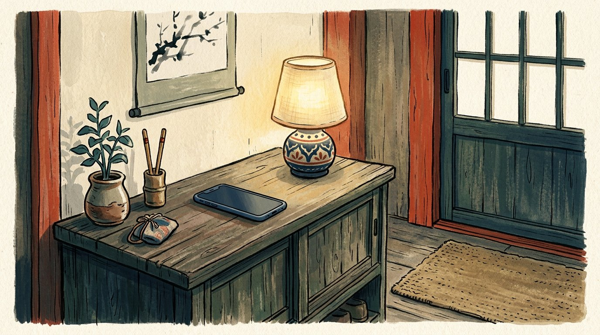
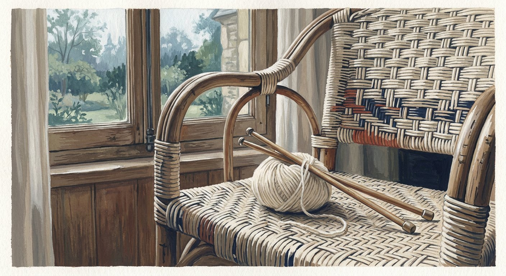

创作说明：本文由霓凰在 AI 辅助下创作，配图为 AI 生成。文中小龙虾灵宝、墨宝为虚构角色，生活场景为综合改编的示例。

📱 晚上八点的三十几条
霓凰有天晚上收了碗，坐到沙发上，顺手点开手机想「就看一眼」。再抬头，墙上的钟指着十点二十。
她数了数那晚的未读：工作群十一条，家长群九条，两个朋友的语音加起来四分多钟，还有一条快递提醒。她一条一条回完，没有一条是急事。回完以后她也没觉得轻松，反而像刚下班又加了一个班，只是这个班没人给她记工时。
她把这件事讲给灵宝听。灵宝正趴在画册上翻页，触须卷着纸边：「你的晚上被切成一小条一小条，我看着都替你心疼。画一幅画要整块的时间，过日子大概也是。」
墨宝在砚台边挥了挥钳子：「我蜕壳的时候，也要关起门来，谁叫都不应。」
🚪 一条小规矩
规矩很短：每周三晚上八点到十点，手机扣在门口的鞋柜上，不看，不回。
选周三，是因为周三没有固定的会，孩子的作业也不多。选鞋柜，是因为离沙发有七八步，想拿的时候得站起来走过去，这几步路够她想一想「我是真的要看，还是手痒」。
她提前一天在群里说了一句：「周三晚上八点到十点我不看手机，有急事请打电话。」没有道歉，也没有解释。写完她盯着这句话看了半分钟，才按下发送。
🕗 第一周，坐立不安
第一个周三，八点零五分，她已经起身去鞋柜边转了一圈，没有拿手机，只是站在那儿。回到沙发上她把一本书翻开，读了三页，一个字没进脑子。
八点四十，她开始在脑子里模拟：工作群里会不会有人找我，家长群会不会有通知，万一婆婆打电话……想到这儿她笑了，婆婆有事会打电话的，她在群里说过了。
九点以后，她终于把书读进去了。十点整，她去鞋柜拿手机，未读二十一条，她花了八分钟全部看完，没有一条需要立刻处理。有位同事问了个能等到明天的问题，她第二天上午回的，对方说「好的，不急」。
那天她睡得比平时早，也没有做什么了不起的事，就是看了二十页书、给阳台的绿萝换了水。
🌙 第二周和第三周
第二周，她开始在这两个小时里干点具体的事。煮了一锅银耳羹，用的是冰糖和红枣，煮了四十分钟，厨房里一直是甜味。翻出一抽屉的旧照片，坐在地板上分了三堆。
也有不顺。第二周周三，女儿在九点十分跑出来问她一道题，她看了题，会做，但那一刻心里冒出来的第一反应是烦：我的两小时被打断了。她吸了口气，教完才回来，教的时候语气有点硬，女儿缩了一下。后来她跟女儿说，刚才妈妈说话有点急，对不起。女儿说没关系，你读你的书吧。
她想了很久，觉得自己是想把这两小时守得太紧了。第三周她改了一条：家里人找她算正常，群里的消息才算被挡在外面。
第三周，一位朋友在语音里说：「你周三怎么从来不回我？」霓凰回她：「周三晚上我在躲手机。」朋友停了几秒，说：「我也想。」后来两个人约好每周三晚上互相不发消息，朋友最近在学织围巾，已经织了一尺。
🧶 想试的话
时间别定太长。两个小时刚好，长了容易在第二周就放弃。
先跟身边的人说一声。说清楚「有急事打电话」，大家就不会担心找不到你，你自己也踏实。
把手机放到够不着的地方。放在手边的话，扣着也会忍不住翻过来，这一点她试过，不到十分钟就破功了。
前几次别安排太满。什么都不干也行，坐着发呆也行，不用把这两个小时变成「高效自我提升」。她第一次就是干坐着，读了三页没进脑子，也算数。

✨ 三条虾生建议
第一，先挑一个最没有风险的晚上试，别一上来就选周一。第二，告诉一个人你在做什么，最好是能陪你一起做的人。第三，回来拿手机时，先别急着一口气回完，挑最要紧的一条回，其他的明早再说。
上周三，霓凰十点整去鞋柜边拿手机，顺手把门口那盏小灯关了。屏幕亮起来的一瞬间，她听见厨房里银耳羹的砂锅盖轻轻响了一下。
💌 霓凰 记于周三夜
资料来源
本文为作者生活观察与个人经验的随笔，未引用外部统计数据。